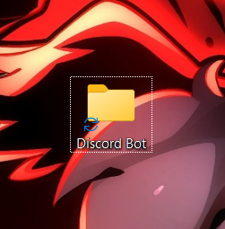
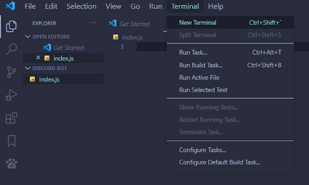
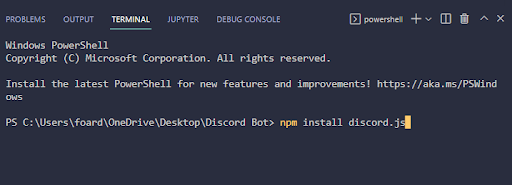
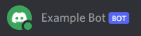
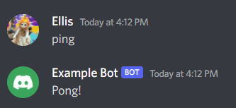
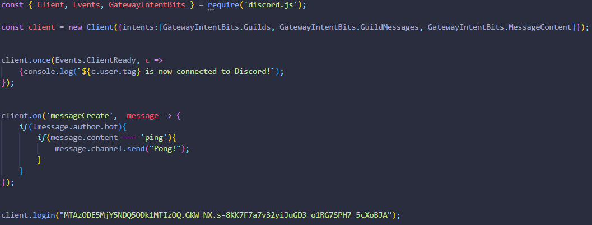

Welcome to creating your first Discord bot using JavaScript! This tutorial will teach you everything, from creating the account for the bot, to writing a super simple command. Sometimes coding for the first time can be very intimidating but I hope to make this tutorial as open as possible, even for somebody who has never written a single line of code.
Creating the bot
The first part of creating a bot in Discord is going to be creating the account for the bot. Go to https://discord.com/developers and sign into your Discord account
After logging in, click “New Application” in the top right corner of the page
Then, create a name for your bot and agree to the terms of service and press create.

Then you’ll see a page similar to this where you can add a profile picture, change the name of your bot,and add to your About Me section of the bot’s profile. On the left side, click on the “bot” tab and press “add bot” and “Yes, do it!”. Don’t worry about the warning.

Now we’ll allow the bot to read messages sent. Scroll down on the bot page and turn on “message content intent” and save the changes.
Next you’ll need to retrieve your bot’s “token”, this token is essentially the login for your bot DO NOT SHARE THIS. If somebody else gets a hold of your bot token they could use it maliciously. Copy your token and save it for later

Next we’ll be inviting your bot to your server, on the menu on the left, open the OAuth2 tab and select the URL Generator. You will see a long list of scopes, the only one you’ll need to check off is the “bot”
Next, you’ll select your bot permissions. You can modify this as much as you need but to make it as simple as possible, add the “administrator” permission. This will grant all permissions to give your bot complete access to the server.

Then, copy the generator URL at the bottom and paste it into your browser. Then invite it to the server you would like. You will then authorize the bot’s permissions.

You've now added the bot to your server!

Getting the bot online
Here’s where the fun part happens. First you will need to install Node.js and follow the install instructions. Then, install a code editor, I suggest Visual Studio Code.


Next, create a folder and open it with Visual Studio Code by right clicking


Once opened, create a file called “index.js”. This will be where you write the code


We will now install discord.js. At the top of your screen you will see an option called “terminal”. Press on this option and open a new terminal.

At the bottom of your screen, in the terminal, type “npm install discord.js”. Npm is a tool that allows you to install thousands of libraries but for now, we’ll only be installing the Discord JavaScript library. This will add multiple files to your folder, but you can ignore them and open your index.js file by clicking on it.


Now we can begin coding! First you’ll need to import the discord.js package by typing “const {Client, Events, GatewayIntentBits} = require(‘discord.js’);”

Next we’ll add intents to allow our bot to interface with specific events in Discord. Add “const client = new Client({intents:[GatewayIntentBits.Guilds, GatewayIntentBits.GuildMessages, GatewayIntentBits.MessageContent]});” on a new line beneath the first.

Now, we’ll login to our bot and bring it online. Remember your bot’s token from earlier? We’ll use that to log into our bot and bring it online for the first time! Add “client.login(“YOUR TOKEN HERE”);” to the very end of the code, and be sure to replace “your token here” with your token, making sure it is surrounded by double quotations.

Back in the terminal, type “node index.js” Your bot should appear online in your server! However, it won’t be doing much yet, you’ll have to add some commands.

We’ll first create a message in your terminal so you know your bot successfully connected to Discord. For this we’ll use the Events constant we created earlier and use it to check for when the bot has successfully connected. Add “client.once(Events.ClientReady, c => {});” before our bot’s login. Events.ClientReady lets our code know when the Client (the bot) has achieved a successful connection.

You’ll also notice the “c” that we added into the code. We use 'c' for the event parameter to keep it separate from the already defined 'client'. Inside of the curly brackets is where we’ll place our code to run and we’ll be sending a message in the terminal using the “console.log” function. Inside of the curly brackets, add “console.log(`${c.user.tag} is now connected to Discord!`);”.

Now when you use the “node index.js” command you’ll receive a message in your terminal telling you that the bot is connected to Discord.

Congratulations! Your bot is now online!
Basic message commands
Now that your bot is online, you’ll need to add some interactions with it. We’ll create a simple ‘ping’ command that will send back the message “pong”. First, you’ll need to have code run whenever a message is sent. Add “client.on(‘messageCreate’, message => {});” between the login and our connect code. This will let the code know whenever a message is sent and then the content of the message will be stored in the “message” that we placed afterwards.

Inside of the curly brackets, we’ll next add a simple check to prevent the bot from looping. Add “if(!message.author.bot){}”. This will prevent the bot from reading its own messages.

Now we’ll add the ping command. Add “if(message.content === ‘ping’){}”. This will check if the message that was sent was the word “ping”.

Now we’re on the last step. We’ll finally send a reply message, in this case “Pong!”. Add “message.channel.send(“Pong!”);” This will send the response into the same channel as the original message.

Finally, back in the terminal, type “node index.js” once again and head over to your Discord server. Now when you type “ping” the bot should send “Pong!”.

Congratulations! Your bot is now working! You can add as many of these commands as you would like!
